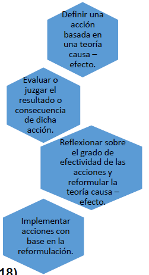
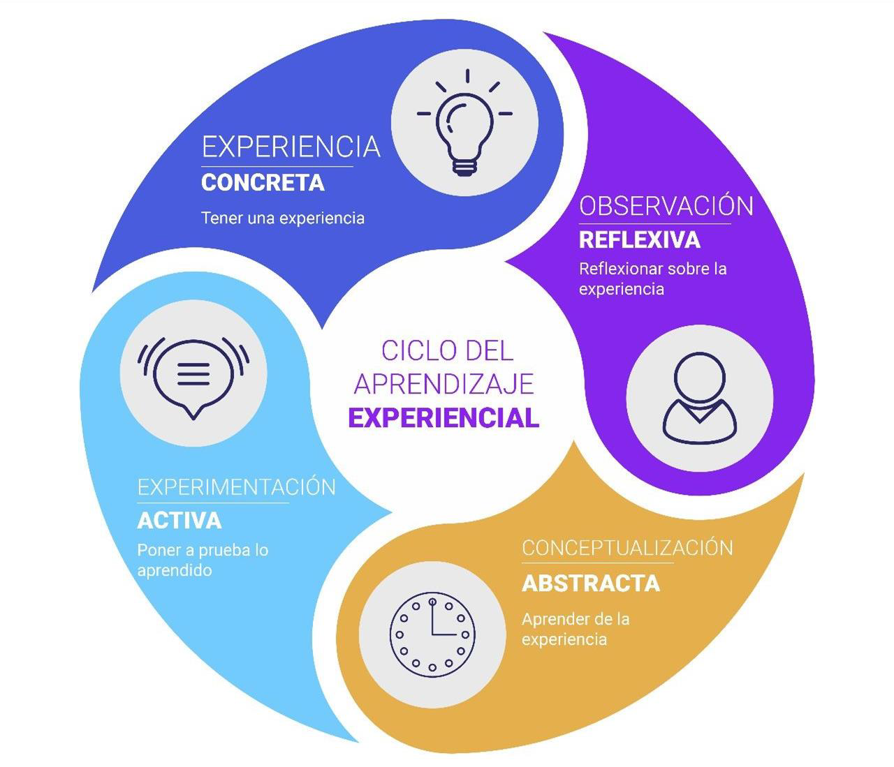
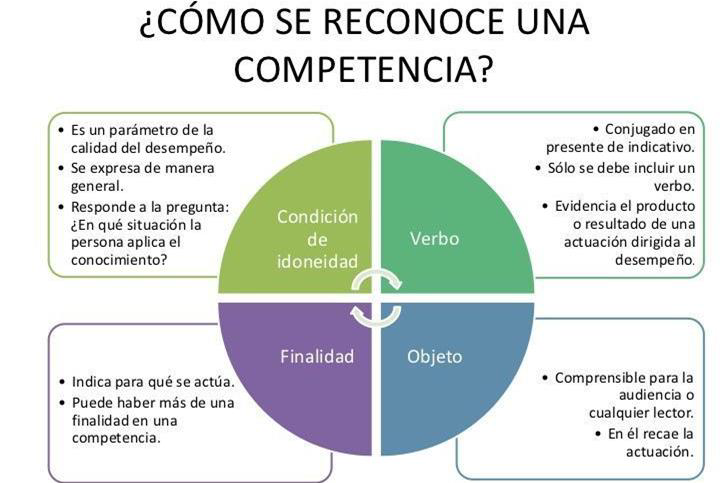

12 UNIDAD IV: EL APRENDIZAJE COLABORATIVO.
Definir el aprendizaje colaborativo con el fin de desarrollar estrategias de enseñanza adecuadas.
12.1 Aprendizaje colaborativo y Estrategias de enseñanza mediante aprendizaje colaborativo.
La realidad actual, en el mundo laboral y profesional exige desarrollar dinámicas de trabajo en equipo, con una estructura jerárquica más horizontal, las escuelas cada vez más enfatizan la importancia del aprendizaje colaborativo como una estrategia que prepara a los estudiantes para los retos que presentan los nuevos mercados laborales.
El aprendizaje colaborativo, potencia la integración de los alumnos de diversas culturas, religiones y costumbres bajo un objetivo común, presentando las siguientes ventajas:
Combate la ansiedad
Permite optimizar la enseñanza
Desarrolla la independencia
Potencia el pensamiento crítico
Desarrolla la responsabilidad individual
Contribuye a la interdependencia positiva
Responde a una sociedad heterogénea y multicultural
12.2 Organizadores gráficos y herramientas de aprendizaje colaborativo.
Las diversas formas para representar gráficamente el conocimiento, tienen diferentes denominaciones, y dependen incluso de su finalidad, pero se pueden limitar a los más utilizados: Diagramas de Venn, Diagramas de flujo, Organigramas, Diagramas causa-efecto, Líneas de tiempo, Infografías, Mapas de ideas, Mapas mentales, Mapas semánticos, Mapas conceptuales, etc.
Esta percepción intenta resaltar el uso de dichas herramientas en función del logro de aprendizajes significativos en los distintos estilos de aprendizaje que presentan los estudiantes.
Los beneficios que proponen Terán y Apolo en cuanto al uso de Organizadores gráficos son los siguientes:
· Clarificar el pensamiento. Aprendes a través de la observación, cómo puedes relacionar unas ideas con otras, y luego decides cómo quieres organizar tu información, aplicando el pensamiento crítico y reflexivo.
· Reforzar la comprensión. Utilizando tus propias palabras, expresa lo que has aprendido.
· Integrar nuevo conocimiento. Hacer uso de organizadores gráficos, permite relacionar conceptos e ideas, hacer interpretaciones, resolver problemas, diseñar planes, etc.
· Retener y recordar nueva información. Nuestra memoria puede almacenar mucha información, pero también te ayuda a fijar tu atención, a crear relaciones utilizando el conocimiento y habilidades que ya posees, para construir un nuevo conocimiento, todo esto incrementa el potencial de tu memoria.
· Identificar conceptos erróneos. Con la práctica de este tipo de actividades, te vas dando cuenta de aquellas cosas que aún no has aprendido.
· Evaluar. A medida que vas profundizando y desarrollando tus habilidades y destrezas en el manejo de los organizadores gráficos, te conviertes en tu propio evaluador de tus tareas, al comparar tus trabajos iniciales con los avances logrados en tu aprendizaje, y te das cuenta que evolucionaste, mejoró su estructura cognitiva.
· Desarrollar habilidades de pensamiento de orden superior. Utilizando herramientas que orienten su pensamiento, los estudiantes pueden lograr organizar la información de manera efectiva.
12.2.1 Aprendizaje colaborativo
El aprendizaje colaborativo es una técnica didáctica que promueve el aprendizaje centrado en el alumno basando el trabajo en pequeños grupos.
Cada miembro del grupo de trabajo es responsable no solo de su aprendizaje, sino de ayudar a sus compañeros a aprender, creando con ello una atmósfera de logro.
Donde los estudiantes con diferentes niveles de habilidad utilizan una variedad de actividades de aprendizaje para mejorar su entendimiento sobre una materia.
El aprendizaje colaborativo
Permite reconocer las diferencias individuales, aumenta el desarrollo interpersonal.
Permite que el estudiante se involucre en su propio aprendizaje y contribuye al logro del aprendizaje del grupo, lo que le da sentido de logro y pertenencia y aumento de autoestima.
Aumenta las oportunidades de recibir y dar retroalimentación personalizada.
Los esfuerzos cooperativos dan como resultado que los participantes trabajen por mutuo beneficio de tal manera que todos los miembros del grupo
Ganan por los esfuerzos de cada uno y de otros.
Reconocen que todos los miembros del grupo comparten un destino común.
Saben que el buen desempeño de uno es causado tanto por sí mismo como por el buen desempeño de los miembros del grupo.
Sienten orgullo y celebran conjuntamente cuando un miembro del grupo es reconocido por su labor o cumplimento.
Ejemplos de aprendizaje colaborativo
Proyectos en grupo.
Trabajo en equipo en laboratorios.
Proyectos de investigación.
Aprendizaje entre pares.
Simulaciones y juego de roles.
12.2.2 Controversia académica
12.2.3 Corrección cooperativa de los deberes
12.2.4 Dibujo cooperativo
12.2.5 Dramatización cooperativa
12.2.6 El juego de las palabras
12.2.7 Equipos de oyentes
12.2.8 Frase/foto/vídeo mural
12.2.9 Gemelos/equipos pensantes
12.2.10 Intercambiar dificultades
12.2.11 Lo que sé y lo que sabemos
12.2.12 Parejas cooperativas de lectura
12.2.13 Parejas cooperativas de toma de apuntes
12.2.14 Plantear el trabajo que se va a realizar
12.2.15 Uno para todos
12.3 Aprendizaje experiencial.
Se define como la generación de una teoría de acción a partir de la propia experiencia, continuamente modificada para mejorar su eficacia. Este proceso de aprendizaje requiere:
Definir una acción basada en una teoría causa –efecto.
Evaluar o juzgar el resultado o consecuencia de dicha acción.
Reflexionar sobre el grado de efectividad de las acciones y reformular la teoría causa –efecto.
Implementar acciones con base en la reformulación.

CICLO DEL APRENDIZAJE EXPERIENCIAL
EXPERIENCIA CONCRETA Tener una experiencia
OBSERVACIÓN REFLEXIVA Reflexionar sobre la experiencia
CONCEPTUALIZACIÓN ABSTRACTА Aprender de la experiencia
EXPERIMENTACIÓN ACTIVA Poner a prueba lo aprendido

El aprendizaje experiencial (experiential learning) se basa en la asunción de que el conocimiento se crea a través de la transformación provocada por la experiencia. La experiencia concreta es trasladada a una conceptualización abstracta la cual es testada activamente a través de nuevas experiencias.
En una escuela secundaria, el departamento de ciencias organiza una excursión de campo de tres días a un parque nacional cercano. Durante la excursión, los estudiantes tienen la oportunidad de aplicar conceptos de ecología aprendidos en clase a través de actividades prácticas y experienciales. Participan en actividades como muestreo de suelos y agua, identificación de especies de plantas y animales, observación de patrones climáticos y análisis de ecosistemas locales. Los estudiantes trabajan en grupos pequeños bajo la supervisión de profesores, interactúan con expertos en el campo y mantienen diarios de campo para registrar sus observaciones y reflexiones.
El tipo de aprendizaje presentado es:
Ejemplos de aprendizaje experiencial
Aprendizaje mediante la resolución de problemas.
Aprendizaje basado en proyectos.
Aprendizaje a través de la experimentación.
Aprendizaje mediante prácticas.
Aprendizaje al aire libre.
12.4 Enseñanza y Aprendizaje por competencias.
Las competencias hablan de un ser, como su término lo indica “competente”. El cual, es un individuo capaz de transferir lo que aprende; pero además tiene la habilidad de poder resolver problemas en situaciones específicas, de acuerdo al nuevo conocimiento adquirido.
De esto, tal como se plantea, podríamos deducir que, tenemos a un estudiante cuya principal cualidad debe ser su autonomía en la búsqueda del aprendizaje. Pero, para poder lograrlo, éste debe ir acompañado de un modelo educativo orientado hacia el crecimiento o construcción del conocimiento.
12.4.1 ¿CÓMO SE RECONOCE UNA COMPETENCIA?
Condición de idoneidad
Es un parámetro de la calidad del desempeño.
Se expresa de manera general.
Responde a la pregunta: ¿En qué situación la persona aplica el conocimiento?
Verbo
Conjugado en presente de indicativo.
Sólo se debe incluir un verbo.
Evidencia el producto o resultado de una actuación dirigida al desempeño.
Objeto
Comprensible para la audiencia o cualquier lector.
En él recae la actuación.
Finalidad
Indica para qué se actúa.
Puede haber más de una finalidad en una competencia.

En el aprendizaje por competencias se deben diseñar estrategias que promuevan:
La creatividad, para elaborar algo nuevo con los conocimientos adquiridos.
Iniciativa, para actuar en situaciones específicas y tomar decisiones.
El pensamiento crítico, que nos invite a reflexionar bajo criterios propios.
La capacidad de enfrentarse a un problema buscando soluciones positivamente y evaluando el riesgo que implican las decisiones tomadas.
12.4.2 Saberes del aprendizaje por competencias.
El aprendizaje por competencias se basa en el desarrollo integral del individuo, por lo que se entrelazan los tres saberes:
Saber Conocer: implica el ámbito cognitivo, es decir la capacidad de internalizar los conocimientos.
Saber Hacer: involucra la aplicabilidad, es decir la práctica que el alumno realiza demostrando dominio de las técnicas y los métodos.
Saber Ser: incluye las actitudes y competencias sociales, es decir como el alumno se desenvuelve emocionalmente ante la búsqueda de conocer y de hacer tanto de manera individual y grupal.
Entendemos que este enfoque por competencias no pretende solucionar mágicamente los problemas en el aula, pero sí mejorar el sentido del trabajo escolar. Para ello, se aprovecha de los beneficios del enfoque constructivista y la evaluación formativa, con el fin de favorecer la asimilación activa de los conocimientos.
12.4.3 Ejemplos de aprendizaje por competencias.
Pensamiento crítico
Trabajo en equipo
Creatividad e Innovación
Gestión del tiempo
Competencias digitales
Título del caso: “Desarrollo de habilidades empresariales a través del aprendizaje por competencias“
Descripción del caso: En una universidad, se implementa un programa de aprendizaje por competencias en el departamento de administración de empresas. Los estudiantes de último año participan en un curso práctico centrado en el desarrollo de habilidades empresariales. Durante el semestre, los estudiantes trabajan en equipos para desarrollar y presentar un plan de negocios para una empresa ficticia. El objetivo del curso es que los estudiantes adquieran habilidades prácticas relevantes para el mundo empresarial, como la capacidad de análisis, la resolución de problemas, la comunicación efectiva y el trabajo en equipo.
Preguntas de análisis
¿Qué competencias específicas están siendo desarrolladas en este caso?
¿Qué actividades o metodologías se utilizan para fomentar el desarrollo de estas competencias?
¿Qué desafíos podrían enfrentar los estudiantes al participar en este enfoque de aprendizaje por competencias?
¿Qué medidas podrían tomarse para mejorar la efectividad del aprendizaje por competencias en este contexto?